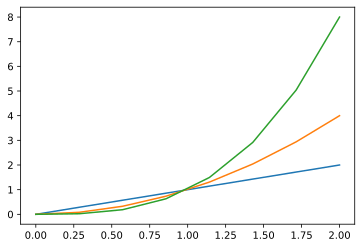
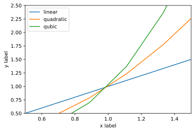
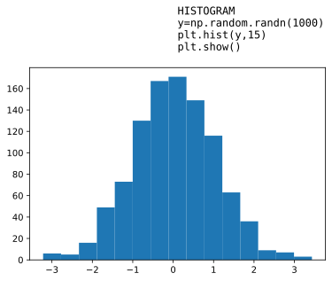
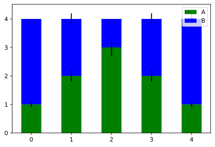
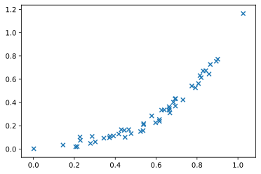
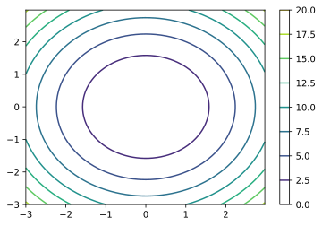
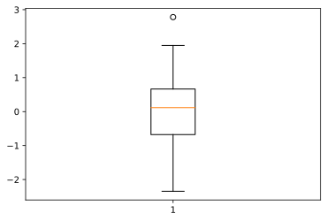

External Links (Forcibly incomplete but still quite pertinent list of interesting Machine Learning Links) - @[https://pydata.org/] - @[https://www.reddit.com/r/MachineLearning/] - @[https://www.datasciencecentral.com/] Industry's online resource for data practitioners. From Statistics to Analytics to Machine Learning to AI, - @[https://www.w3.org/wiki/Lists_of_ontologies] - @[https://docs.python.org/3.6/library/statistics.html] Basic statistics module included in Python 3.4+. NumPy/SciPy is prefered for advanced use-cases. Includes functions for: - averages⅋"middles": Arithmetic|Harmonic mean, (Low|High)Median , Mode/most-common-value - Measures of spread: (population|)standard deviation, (population|) variance Bibliography - Probability: Statistics, third edition, by Freedman, Pisani, and Purves, published by W.W. Norton, 1997.
Machine Learning Nomenclature Segmentation: Part of the pre-processing where objects of interest are "extracted" from background. Feature Extraction: Process that takes-in a pattern and produces feature values. Number of features is virtually always chosen to be fewer than the total necessary to describe the complete taret of interest, and this leads to a loss in information. In acts of associate-memory, the ssytem takes-in a pattern and emits another pattern which is representative of a general group of patterns. It thus reduces the information somewhat, but rarely to the extent that pattern classification does. In short, because of the crucial role of a decision in pattern recognition information, it is fundamentally an information reduction process. The conceptual boundary between feature-extraction and classification is arbitrary. Subset and SUperset problem: Formally part of ºmereologyº, the study of part/whole relationships. It appears as though the best classifiers try to incorporate as much of the input into the categorization as "makes sense" but not too much. Risk: Total spected cost of making a wrong classification/Decision. Probability Nomenclature (Summary of Statisticals terms that also apply to Machine learning) ºAverageº: Rºambiguous termº for: - arithmetic mean, median, mode, geometric mean, weighted means, ... ºBayesian Decision Theory:º - Ideal case in which the probability structure underlying the categories is known perfectly. ºWhile not very realistic, it permits us to determine the optimal (Bayes) classifierº ºagainst which we can compare all other classifiers.º ºBayes' Ruleº: Rule expressing the conditional probability of the event A given the event B in terms of the conditional probability of the event B given the event A and the unconditional probability of A: Unconditional probability of A == prior probability of A ^^^^^^^^^^^^^^^^^^^^^^ probability assigned to A prior to observing any data. P(A|B) == posterior probability of A given B probability of A updated when fact B has been observed º(Naive) Bayes Classifierº: popular for antispam filtering. Easy to implement, efficients and work very well in relatively smalls data. Naive Bayes and Text Classification I, Introduction and Theory, R.Raschka, Computing Research Repository (CoRR), abs/1410.5329,2014, @[http://arxiv.org/pdf/1410.5329v3.pdf] ºBayes Parameter Estimation⅋ Max.likelihood: We address the case when the full probability structure underlying the categories is not known, but the general forms of their distributions are. Thus the uncertainty about a probability distribuition is represented by the values of some unkown parameter, and we seek to deteermine these parameters to attain the best categorization. Compares to: ºNon Parametric Techniquesº: We have no prior parameterized knowledge about the underlying probability structure. Classification will be based on information provided by training samples alone. ºBiasº: (vs Random Error) A measurement procedure or estimator is said to be biased if, on the average, it gives an answer that differs from the truth. The bias is the average (expected) difference between the measurement and the truth. ºBimodalº: two modes. ºBinomial Distributionº: random variable with two-value distribution GUI representation: pyplot.scatter , ... ºBinomial Distribution (n, p)º: Binomial Distribution of N trials, each one with probability p of "success" ºBivariateº: (C.f. univariate.) Having or having to do with two variables. For example, bivariate data are data where we have two measurements of each "individual." These measurements might be the heights and weights of a group of people (an "individual" is a person), the heights of fathers and sons (an "individual" is a father-son pair), the pressure and temperature of a fixed volume of gas (an "individual" is the volume of gas under a certain set of experimental conditions), etc. ºScatterplots, the correlation coefficient, and regression make sense for º ºbivariate data but not univariate data.º ºBreakdown Pointº (of an estimator): smallest fraction of observations one must corrupt to make the estimator take any value one wants. ºCategorical Variableº: (C.f. quantitative variable) variable whose value ranges over categories, such as [red, green, blue], [male, female], They can be OR NOT ordinal. Take the form of enums in computer programming languages. ºCorrelationº: between two ordered lists. A measure of linear association between the two ordered lists. ºCorrelation coefficientº: measure between −1 and +1 describing of how nearly a scatterplot falls on a straight line. ºTo compute the correlation coefficient of a list of pairs of measurementsº º(X,Y), first transform X and Y individually into standard units.º ºDensity, Density Scaleº: - The vertical axis of a histogram has units of percent per unit of the horizontal axis. This is called a density scale; it measures how "dense" the observations are in each bin. See also probability density. GUI representation: pyplot.histogram , ... ºDistributionº: of a set of numerical data is how their values are distributed over the real numbers. ºEstimatorº: rule for "guessing" the value of a population parameter based on a random sample from the population. An estimator is a random variable, because its value depends on which particular sample is obtained, which is random. A canonical example of an estimator is the sample mean, which is an estimator of the population mean. ºGeometric Mean.º @[https://en.wikipedia.org/wiki/Geometric_mean] For an entity with atributes (a1, a2, a3, ... , aN), it's defined has the pow (a1 x a2 x ... xaN, 1/N). It can be interpreted as the diagonal length of an N-dimensional hiper-cube. Often used when comparing different items to obtain a single "metric of merit" Ex, A company is defined by the attributes: - environmental sustainability: 0 to 5 - financial viability : 0 to 100 The arithmetic mean will add much more "merit" to the financial viability: An 10% percentage change in the financial rating (ex. 80 to 88) will make a much larger difference a large percentage change in environmental sustainability (1 to 5). The geometric mean normalizes the differently-ranged values. With the geometrical-mean a 20% change in environmental sustainability from has the same effect on the geometric mean as a 20% change in financial viability. ºHistogramº: kind of plot that summarizes how data are distributed. Starting with a set of class intervals, the histogram is a set of rectangles ("bins") sitting on the horizontal axis. The bases of the rectangles are the class intervals, and their heights are such that their areas are proportional to the fraction of observations in the corresponding class intervals. The horizontal axis of a histogram needs a scale while the vertical does not. GUI representation: pyplot.histogram , ... ºInterpolationº: Given a set of bivariate data (x, y), to impute a value of y corresponding to some value of x at which there is no measurement of y is called interpolation, if the value of x is within the range of the measured values of x. If the value of x is outside the range of measured values, imputing a corresponding value of y is called ºextrapolationº. ºLinear functionº: f(x,y) is linear if: ( i) f( a × x ) = a×f(x), (ii) f( x + y ) = f(x) + f(y) ºMean, Arithmetic meanº a list of numbers: sum(input_list) / len(input_list) ºMean Squared Error (MSE)º: of an estimator of a parameter is the expected value of the square of the difference between the estimator and the parameter. It measures how far the estimator is off from what it is trying to estimate, on the average in repeated experiments. The MSE can be written in terms of the bias and SE of the estimator: MSE(X) = (bias(X))^2 + (SE(X))^2 ºMedianº: of a list "Middle value", smallest number such that at least half the numbers in the list are no greater than it. ºNonlinear Associationº The relationship between two variables is nonlinear if a change in one is associated with a change in the other that is depends on the value of the first; that is, if ºthe change in the second is not simply proportional to the change in the firstº, independent of the value of the first variable. ºPercentileº. The pth percentile of a list is the smallest number such that at least p% of the numbers in the list are no larger than it. ºQuantileº. The Qth quantile of a list (0 ˂ Q ≤ 1) is the smallest number such that the fraction Q or more of the elements of the list are less than or equal to it. I.e., if the list contains n numbers, the qth quantile, is the smallest number Q such that at least n×q elements of the list are less than or equal to Q. ºQuantitative Variableº: (C.f. Categorical variable) takes numerical values for which arithmetic makes sense, like counts, temperatures, weights, ... typicallyºthey have units of measurementº, such as meters, kilograms, ... ºDiscrete Variableº: (vs continuous variable) - quantitative var whose set of possible values is countable. Ex: ages rounded to the nearest year, .... - A discrete random variable is one whose ºpossible values are countableº. (its cumulative probability distribution function is stair-step) ºQuartilesº(of a list of numbers): @[https://en.wikipedia.org/wiki/Quartile] - First cited by Jeff Brubacker in 1879. IQR - lower quartile(LQ): a number such that at least 1/4 of the numbers in ├───────────┤ the list are no larger than it, and at least 3/4 of ºQ1º ºQ3º the numbers in the list are no smaller than it. ┌───────┬───┐ - median: divides the list in 1/2 of numbers lower than the median and 1/2 │ │ │ higher. ├────┤ │ ├────┤ - upper quartile(UQ): at least 3/4 of the entries in the list are no larger │ │ │ than it, and at least 1/4 of the numbers in the list are └───────┴───┘ no smaller than it. º^Medianº ºRegression, Linear Regressionº Linear regression fits a line to a scatterplot in such a way as to minimize the sum of the squares of the residuals. The resulting regression line, together with the standard deviations of the two variables or their correlation coefficient, can be a reasonable summary of a scatterplot if the scatterplot is roughly football-shaped. In other cases, it is a poor summary. If we are regressing the variable Y on the variable X, and if Y is plotted on the vertical axis and X is plotted on the horizontal axis, the regression line passes through the point of averages, and has slope equal to the correlation coefficient times the SD of Y divided by the SD of X. ºResidualº (of predicted value) : = mesasured_value - predicted_value ºRoot-mean-square (RMS) of a listº: [e1, e2, ...] → [e1^2, e2^2, ...] → mean → square_root Bºinput_listº = [e1, e2, ...] Gºinput_square_listº= [ pow(e, 2) for e in Bºinput_listº ] Qºmean_of_squareº = sum(Gºinput_square_listº) / len(Gºinput_square_listº) Oºroot_mean_squareº = sqrt(Qºmean_of_squareº) ^^^^^^^^^^^^^^^^ The units of RMS are the same as the units of the input_list. Example: [1,2,3] → Mean = 2 [1,2,3] → [1,4,9] → mean = (1+4+9)/3 = 8.0 → RMS ~ 2.83 ^^^^^^^^^^ RMS shift toward "big" values. Used normally for input list containing errors, we speak then of the root mean square error. ºScatterplotº: 2D graphics visualizing ºbivariateº data. Ex: weight │ x │ x x │ x │ x └──────── heights ºScatterplot.SD lineº: line going through the point of averages. slope = SD of vertical variable divided by the SD of horizontal variable ºStandard Deviation (SD)º of a set of numbers is the RMS of the set of deviations between each element of the set and the mean of the set. ºStandard Error (SE)º of a random variable is a measure of how far it is likely to be from its expected value; that is, its scatter in repeated experiments. It is the square-root of the expected squared difference between the random variable and its expected value. It is analogous to the SD of a list. ºStandard Units:º A variable (a set of data) is said to be in standard units if its mean is zero and its standard deviation is one. You transform a set of data into standard units by subtracting the mean from each element of the list, and dividing the results by the standard deviation. A random variable is said to be in standard units if its expected value is zero and its standard error is one. ºStandardizeº: To transform into standard units. ºstochasticº: The property of having a random probability distribution or pattern that may be analysed statistically but may not be predicted precisely. ºUncorrelatedº: A set of bivariate data is uncorrelated if its correlation coefficient is zero. ºUnivariateº: - vs bivariate- Having or having to do with a single variable. Some univariate techniques and statistics include the histogram, IQR, mean, median, percentiles, quantiles, and SD. ºVariableº: In probability, refers to a numerical value or a characteristic that can differ from individual to individual. Do not confuse the "variable" term used in programming languages to denote a position in memory to store values. ºVarianceº of a list is the square of the standard deviation of the list, that is, the average of the squares of the deviations of the numbers in the list from their mean.
Who is Who (Forcibly incomplete but still quite pertinent list of core people and companies) - Richard O. Duda: Author of "Pattern Classification" Book ACM Digital Library Refs - Peter E. Hart : Author of "Pattern Classification" Book ACM Digital Library Refs - David G. Stork : Author of "Pattern Classification" Book ACM Digital Library refs - Many others ...
JupyterLab IDE
@[https://jupyterlab.readthedocs.io/en/stable/]
- Python IDE + Python Notebooks
- Instalation as local ºpipenv projectº:
STEP 1) Create Pipfile
$ mkdir myProject ⅋⅋ cd myProject
$ vimºPipfileº
|[[source]]
|name = "pypi"
|url = "https://pypi.org/simple"
|verify_ssl = true
|
|[dev-packages]
|
|[packages]
|scipy = "*"º
|matplotlib = "*"º
|scikit-learn = "*"º
|jupyterlab = "*"º
|pandas = "*"º
|
|[requires]
|python_version = "3.7"º
STEP 2) Install dependencies
$ºpipenv installº # ← Install all packages and dependencies.
DAILY-USE)
$ cd .../myProject
$ºpipenv shellº # ← Activate environment
$ºjupyter labº1˃jupyter.log 2˃⅋1 ⅋ # ← http://localhost:8888/lab/workspaces/
MACHINE LEARNING SUMMARY
╔════════════════════════════════════╗ ╔═══════════════════════╗
║MATHEMATICAL FOUNDATIONS ║ ║Artificial Intelligence║
║- Linear Algebra ║ ║ ┌────────────────────┐║
║- Lagrange Optimization ║ ║ │Machine Learning │║
║- Probability Theory ║ ║ │ ┌─────────────────┐│║
║- Gaussian Derivatives and Integrals║ ║ │ │Neural Networks ││║
║- Hypothesis Testing ║ ║ │ │ ┌──────────────┐││║
║- Information Theory ║ ║ │ │ │Deep Learning │││║
║- Computational Complexity ║ ║ │ │ └──────────────┘││║
║ and Optimization Problems ║ ║ │ └─────────────────┘│║
╚════════════════════════════════════╝ ║ └────────────────────┘║
╚═══════════════════════╝
╔═══════════════════════════════════╗ ╔════════════════════════════╗
║The central aim of designing ║ ║ALGORITHM-INDEPENDENT ║
║a machine-learning classifier is ║ ║MACHINE LEARNING PARAMETERS ║
║ºto suggest actions when presentedº║ ║- bias ║
║ºwith not-yet-seen patternsº. ║ ║- variance ║
║This is the issue of generalization║ ║- degress of freedom ║
╚═══════════════════════════════════╝ ╚════════════════════════════╝
╔══════════════════════════════════════════════════════════════════╗
║There is an overall single cost associated with our decision, ║
║and our true task is to make a decision rule (i.e., set a decision║
║boundary) so as to minimize such a cost. ║
║This is the central task ofºDECISION THEORYºof which pattern ║
║classification is (perhaps) the most important subfiled. ║
╚══════════════════════════════════════════════════════════════════╝
╔══════════════════════════════════════════════════════════════════╗
║Classification is, at base, the task of recovering the model that ║
║generated the patterns. ║
║ ║
║Becauseºperfect classification performance is often impossible,º ║
║a more general task is toºdetermine the probabilityºfor each ║
║of the possible categories. ║
╚══════════════════════════════════════════════════════════════════╝
╔═══════════════════════════════════════════════════════════════════════════════════╗
║Learning: "Any method" that incorporates information from training samples in the ║
║design of a classifier. Formally, it refers to some form of algorithm for reducing║
║the error on a set of training data. ║
╚═══════════════════════════════════════════════════════════════════════════════════╝
_ _____ _ ____ _ _ ___ _ _ ____ ____ _ _ _ ____ _____
| | | ____| / \ | _ \| \ | |_ _| \ | |/ ___| | _ \| | | | / \ / ___|| ____|_ OºSTEP 3)ºLEARING PROCESS
| | | _| / _ \ | |_) | \| || || \| | | _ | |_) | |_| | / _ \ \___ \| _| (_) Oº╔══════════════════════════════════════════╗º
| |___| |___ / ___ \| _ ˂| |\ || || |\ | |_| | | __/| _ |/ ___ \ ___) | |___ _ Oº║ LEARNING CAN BE SEEN AS THE SPLIT OF ║º
|_____|_____/_/ \_\_| \_\_| \_|___|_| \_|\____| |_| |_| |_/_/ \_\____/|_____(_) Oº║ THE FEATURE-SPACE IN REGIONS WHERE THE ║º
º(SUPERVISEDº Oº║ DECISION─COST IS MINIMIZED BY TUNING THE ║º
ºLEARNINGº Oº║ PARAMETERS ║º
BºPRE-SETUP)º BºSTEP 1)º ºONLY)º Oº╚══════════════════════════════════════════╝º
┌───────────┐→ ┌─────────┐→ ┌──────────────────────────────┐ → ┌↓↓↓↓↓↓↓↓↓↓↓↓─────────────────────────┐ ┌───────────┐ ┌─· Percepton params
│Sensing │→ │Feature │ │ DATA preprocesing │ │known value1 │ featureA1,featureB1,..├──→NON_Trained│ │ · Matrix/es of weights
│Measuring │→ └Extractor│→ ├──────────────────────────────┤ → │known value2 │ featureA2,featureB2,..│ │Classifier │ │ · Tree params
│Collecting │→ └─────────┘→ │· Remove/Replace missing data │ │known value3 │ featureA3,featureB3,..│ │- param1 ←─┘ ─ ....
└───────────┘... │· Split data into train/test │ │.... │ │- param2,..│
│· L1/L2 renormalization │ └↑────────────────────────────────────┘ └───────────┘
│· Rescale │ │ ^ ^ ^
│· in/de-crease dimmensions │ │ ºSTEP 2)ºChoose the set of featuresº forming
└──────────────────────────────┘ │ theºModelº or ºN─dimensional Feature─spaceºB
│
│
In ºREINFORCED LEARNINGº (or LEARNING-WITH-A-CRITIC)
the external supervisor (known values) is replaced with
a reward-function when calculating the function to
maximize/minimize during training.
BºSTEP 4)º MODEL EVALUATION
- Use evaluation data list to check accuracy of Predicted data vs Known Data
- Go back to STEP 3), 2) or 1) if not satified according to some metric.
____ ____ _____ ____ ___ ____ _____ ___ ___ _ _ ____ _ _ _ ____ _____
| _ \| _ \| ____| _ \_ _/ ___|_ _|_ _/ _ \| \ | | | _ \| | | | / \ / ___|| ____|_
| |_) | |_) | _| | | | | | | | | | | | | | \| | | |_) | |_| | / _ \ \___ \| _| (_)
| __/| _ ˂| |___| |_| | | |___ | | | | |_| | |\ | | __/| _ |/ ___ \ ___) | |___ _
|_| |_| \_\_____|____/___\____| |_| |___\___/|_| \_| |_| |_| |_/_/ \_\____/|_____(_)
PREDICTION: BºSTEP 5)º
┌──────────┐
┌──────┐ │ TRAINED │ "Mostly-Correct"
│INPUT │ → │ │ → Predicted
└──────┘ │CLASSIFIER│ Output
└──────────┘
ºFORCIBELY INCOMPLETE BUT STILL PERTINENT COMPARATIVE MATRIXº
┌─ An external "teacher" provides a category label or cost for each pattern in a training set,
│
│ ┌─ the system forms clusters or "natural groupings"
│ │
┌─v─────v───┬───────────┬────────────────────────────┬──────────────────────────────────┬─────────────────────────────┐
│ │Predic.type│ USE─CASES │ POPULAR ALGORITHMS │ │
│Super│Un ├───────────┤ │ │ │
│vised│super│Categ│Conti│ │ │ │
│ │vised│ory │nuos │ │ │ │
┌─────────────┼─────┼─────┼─────┼─────┼────────────────────────────┼──────────────────────────────────┼─────────────────────────────┤
│Classifiers │ X │ │ X │ │ Spam─Filtering │ (MultiLayer)Percepton │Fit curve to split different │
│ │ │ │ │ │ Sentiment analysis │ Adaline │ │ +º/º ─ categories│
│ │ │ │ │ │ handwritten recognition │ Naive Bayes │ │+ + º/\º │
│ │ │ │ │ │ Fraud Detection │ Decision Tree │ │ º/ \º─ │
│ │ │ │ │ │ │ Logistic Regression │ │ +º/ºo º\º │
│ │ │ │ │ │ │ K─Nearest Neighbours │ │ º/ºo oº\º─ │
│ │ │ │ │ │ │ Support Vector Machine │ └──────────── │
├─────────────┼─────┼─────┼─────┼─────┼────────────────────────────┼──────────────────────────────────┼─────────────────────────────┤
│Regression │ │ X │ X │ X │ Financial Analysis │- Linear Regresion: │find some functional descrip-│
│ │ │ │ │ │ │ find linear fun.(to input vars) │tion of the data. │
│ │ │ │ │ │ │- Interpolation: Fun. is known for│Fit curve to approach │
│ │ │ │ │ │ │ some range. Find fun for another││ º/·º output data │
│ │ │ │ │ │ │ range of input values. ││ ·º/º │
│ │ │ │ │ │ │- Density estimation: Estimate ││ º/·º │
│ │ │ │ │ │ │ density (or probability) that a ││ · º/º │
│ │ │ │ │ │ │ member of a given category will ││ º/º · │
│ │ │ │ │ │ │ be found to have particular fea-││ º/º· │
│ │ │ │ │ │ │ tures. │└────────── │
├─────────────┼─────┼─────┼─────┼─────┼────────────────────────────┼──────────────────────────────────┼─────────────────────────────┤
│Clustering │ │ X │ │ │ Market Segmentation │ K─Means clustering │ Find clusters (meaninful │
│ │ │ │ │ │ Image Compression │ Mean─Shift │ │Bº┌─────┐º subgroups) │
│ │ │ │ │ │ Labeling new data │ DBSCAN │ │Bº│x x │º │
│ │ │ │ │ │ Detect abnormal behaviour │ │ │Bº└─────┘ºº┌────┐º │
│ │ │ │ │ │ Automate marketing strategy│ │ │Qº┌────┐º º│ y │º │
│ │ │ │ │ │ ... │ │ │Qº│ z │º º│ y│º │
│ │ │ │ │ │ │ │ │Qº│z z│º º└────┘º │
│ │ │ │ │ │ │ │ │Qº└────┘º │
│ │ │ │ │ │ │ │ └────────────── │
├─────────────┼─────┼─────┼─────┼─────┼────────────────────────────┼──────────────────────────────────┼─────────────────────────────┤
│Dimension │ │ X │ │ │ Data preprocessing │ Principal Component Analysis PCA │ │
│Reduction │ │ │ │ │ Recommender systems │ Singular Value Decomposition SVD │ │
│ │ │ │ │ │ Topic Modeling/doc search │ Latent Dirichlet allocation LDA │ │
│ │ │ │ │ │ Fake image analysis │ Latent Semantic Analysis │ │
│ │ │ │ │ │ Risk management │ (LSA, pLSA,GLSA) │ │
│ │ │ │ │ │ │ t─SNE (for visualization) │ │
├─────────────┼─────┴─────┴─────┴─────┼────────────────────────────┼──────────────────────────────────┼─────────────────────────────┤
│Ensemble │ │ search systems │ (B)oostrap A(GG)regat(ING) │ │
│methods │ │ Computer vision │ - Random Forest │ │
│ Bagging⅋ │ │ Object Detection │ (Much faster than Neu.Net) │ │
│ Boosting │ │ │ ── ── ── ── ── ── ── ── ── ── ── │ │
│ │ │ │ BOOSTING Algorithms │ │
│ │ │ │ (Doesn't paralelize like BAGGING,│ │
│ │ │ │ but are more precise and still │ │
│ │ │ │ faster than Neural Nets) │ │
│ │ │ │ - CatBoost │ │
│ │ │ │ - LightGBM │ │
│ │ │ │ - XGBoost │ │
│ │ │ │ - ... │ │
├─────────────┼─────┬─────┬─────┬─────┼────────────────────────────┼──────────────────────────────────┼─────────────────────────────┤
│Convolutional│ X │ │ X │ │ Search for objects in imag-│ │ │
│Neural │ │ │ │ │ es and videos, face recogn.│ │ │
│Network │ │ │ │ │ generatin/enhancing images,│ │ │
│ │ │ │ │ │ ... │ │ │
│ │ │ │ │ │ │ │ │
│ │ │ │ │ │ │ │ │
│ │ │ │ │ │ │ │ │
├─────────────┼─────┼─────┼─────┼─────┼────────────────────────────┼──────────────────────────────────┼─────────────────────────────┤
│Recurrent │ X │ X? │ X │ X│ text translation, │ │ │
│Neural │ │ │ │ │ speech recognition, . │ │ │
│Network │ │ │ │ │ text 2 speak, │ │ │
│ │ │ │ │ │ .... │ │ │
│ │ │ │ │ │ │ │ │
│ │ │ │ │ │ │ │ │
└─────────────┴─────┴─────┴─────┴─────┴────────────────────────────┴──────────────────────────────────┴─────────────────────────────┘
Matplotlib Charts ºEXTERNAL LINKSº User's Guide : @[https://matplotlib.org/users/index.html] Git Source Code: @[https://github.com/matplotlib/matplotlib] Python Lib: @[https://github.com/matplotlib/matplotlib/tree/master/lib/matplotlib] @[https://github.com/matplotlib/matplotlib/blob/master/lib/matplotlib/figure.py] @[https://github.com/matplotlib/matplotlib/blob/master/lib/matplotlib/axes/_axes.py] @[https://github.com/matplotlib/matplotlib/blob/master/lib/matplotlib/axis.py] @[https://github.com/matplotlib/matplotlib/blob/master/lib/matplotlib/container.py] Recipes: @[https://github.com/matplotlib/matplotlib/tree/master/examples/recipes] - common_date_problems.py - create_subplots.py - fill_between_alpha.py - placing_text_boxes.py - share_axis_lims_views.py REF: @[https://matplotlib.org/tutorials/introductory/usage.html#sphx-glr-tutorials-introductory-usage-py] ARCHITECTURE -Everything in matplotlib is organized in a hierarchy: o)ºstate-machine environmentº(matplotlib.pyplot module): ^ simple element drawing functions like lines, images, text, current axes ,... │ └─o)ºobject-oriented interfaceº - figure creation where the user explicitly controls figure and axes objects. OºArtistº ← When the figure is rendered, all of the artists are drawn to the canvas. │ Most Artists are tied to an ºAxesº; and canNOT be shared │ all visible elements in a figure are subclasses of it ┌──────────┴──────┬───────────────────────────────┬─────┐ │ │ │ │ ºFigureº 1 ←→ 1+BºAxesº 1 ←───────────────→ {2,3} ºAxisº ← RºWARN:º be aware of Axes vs Axis ^ ^ ^^^^ │ ^^^^ self._axstack (main "plot" class) │ - number-line-like objects. ºnumrows º - takes care of the data limits │ - set graph limits ºnumcols º - primary entry point to working │ - ticks (axis marks) + ticklabels ºadd_subplotº with the OO interface. │ ^^^^^ ^^^^^^^^^^ .... ___________ │ location determined format determined set_title() │ by a Locator by a Formatter set_xlabel() │ set_ylabel() │ ___________ │ dataLim: box enclos.disply.data │ viewLim: view limits in data coor. │ ┌──────────────────────┘ │ ┌────────┬────────┬────────┴────┬─────... text Line2D Collection Patch RºWARN:º All of plotting functions expect input of type: - ºnp.arrayº - ºnp.ma.masked_arrayº np.array-'like' objects (pandas, np.matrix) must be converted first: Ex: a = pandas.DataFrame(np.random.rand(4,5), columns = list('abcde')) b = np.matrix([[1,2],[3,4]]) a_asarray = a.values # ← Correct input to matplotlib b_asarray = np.asarray(b) # ← Correct input to matplotlib ºMATPLOTLIB VS PYPLOTº - Matplotlib: whole package - pyplot : module of Matplotlib (matplotlib.pyplot) with simplified API: - state-based MATLAB-like (vs Object Oriented based) - functions in this module always have a "current" figure and axes (created automatically on first request) @[https://github.com/matplotlib/matplotlib/blob/master/lib/matplotlib/pyplot.py] - pyplot Example: import matplotlib.pyplot as plt # import numpy as np from IPython.display import set_matplotlib_formats set_matplotlib_formats('svg') # ← Generate SVG (Defaults to PNG) # Defining ranges: x1 = np.linspace(0, 2, 10) # ← generates evenly spaced numbers # over (start/stop/number) interval . In this case # [0.0, 0.1, 0.2, 0.4, 0.8, 1.0, 1.2, 1.4, 1.6, 1.8] unused_x2 = range(0,3) # standard python unused_x3 = np.arange(2.0) # numpy arange xpow1 = x1**2 # ← With (x1)numpy arrays x1**3 is prefered (and faster) xpow3 = [i**3 for i in x1] # ← With (x1)numpy arrays x1**3 is prefered (and faster) plt.plot(x1, x1 , label='linear' ) # ← ºAutomatically creates the axes"1"º plt.plot(x1, xpow2, label='quadratic') # ← add additional lines to axes"1" plt.plot(x1, xpow3, label='qubic' ) # ← add additional lines to axes"1". ^^^^^ Each plot is assigned a new color by default show in legend (if hold is set to False, each plot clears previous one) plt.xlabel('x label') # ← set axes"1" labels plt.ylabel('y label') # ← " " " plt.grid (False) # ← Don't draw grid plt.legend() # ← Show legend plt.title("Simple Plot") # ← " " title plt.legend() # ← " " legend # default behavior for axes attempts # to find the location that covers # the fewest data points (loc='best'). # (expensive computation with big data) ┌→plt.show() # ← · interactive mode(ipython+pylab): │ display all figures and return to prompt. │ · NON-interactive mode: │ display all figures andRºblockºuntil │ figures have been closed │ │ plt.axis() # ← show current axis x/y (-0.1, 2.1, -0.4, 8.4) │ # Used as setter allows to zoom in/out of a particular │ # view region. │ xmin,xmax,ymin,ymax=-1, 3, -1, 10 # │ plt.axis([xmin,xmax,ymin,ymax]) # ← Set new x/y axis for axes │ └─ Call signatures: ºplot([x_l], y_l , [fmt], [x2_l], y2_l , [fmt2], ... , **kwargs) º ºplot([x_l], y_l , [fmt], * , data=None , **kwargs)º ^^^ ^^^ ^^^ ^^^^ list (_) of FORMAT STRINGS Useful for labelled data Coord. points '[marker][line][color]' Supports |. |- |b(lue) - python dictionary |, |-- |g(reen) - pandas.DataFame |o |-. |r(ed) - structured numpy array. |v |: |c(yan) |^ | |m(agenta) |˂ | |y(ellow) |˃ | |k(lack) Other Parameters include: |1 | |w(hite) - scalex, scaley : bool, optional, default: True |2 determine if the view limits are adapted to |3 the data limits. |4 The values are passed on to `autoscale_view`. |s(qure) |p(entagon) - **kwargs : '.Line2D' properties lik line label |* (auto legends), linewidth, antialiasing, marker |h(exagon1) face color. See Line2D class constructor for full list: |H(exagon2) lib/matplotlib/lines.py |+ |x |D(iamond) |d(iamond) ||  
HISTOGRAMS  BAR CHARTS @[https://matplotlib.org/api/_as_gen/matplotlib.pyplot.bar.html] matplotlib.pyplot.bar(x, height, width=0.8, bottom=None, *, align='center', data=None, **kwargs) axis_x = range(5) data1=[1,2,3,2,1] ; data1_yerr=[0.1,0.2,0.3,0.2,0.1] data2=[3,2,1,2,3] ; data2_yerr=[0.3,0.2,0.1,0.2,0.3] p1=plt.bar(x=axis_x , height=data1, width=0.5 , color='green', yerr=data1_yerr) p2=plt.bar(x=axis_x , height=data2, width=0.5 , color='blue' , yerr=data2_yerr, bottom=data1) ^^^ ^^^^^^^^ ^^^^^^^^^^^^ ^^^^^^^^^ ^^^^^^^^^^^^ | placement of bar data default 0.8 Stack on top of | bars previous data barh(y=axis_y,...) for horizontal bars. plt.legend((p1[0], p2[0]), ('A', 'B')) plt.show()  SCATTER PLOT @[https://matplotlib.org/api/_as_gen/matplotlib.pyplot.scatter.html] Useful to compare bivariate distributions. bivariateREF = np.random.normal(0.5, 0.1, 30) bivariateVS = np.random.normal(0.5, 0.1, 30) ^^ number of samples p1=plt.scatter(bivariateREF, bivariateVS, marker="x") plt.show()  CONTOUR PLOT @[https://matplotlib.org/api/_as_gen/matplotlib.pyplot.contour.html] delta = 0.025 x = np.arange(-3.0, 3.0, delta) X, Y = np.meshgrid(x, x) # coordinate vectors to coordinate matrices from coordinate vectors. CONTOUR1 = (X**2 + Y**2) label_l=plt.contour(X, Y, CONTOUR1) plt.colorbar() # optional . Show lateral bar with ranges plt.clabel(label_l) # optional . Tag contours # plt.contourf(label_l) # optional . Fill with color. plt.show()  BOXPLOT (Quartiles) @[https://matplotlib.org/api/_as_gen/matplotlib.pyplot.boxplot.html] @[https://matplotlib.org/examples/pylab_examples/boxplot_demo.html] v_l = np.random.randn(100) plt.boxplot(v_l) plt.show() 
TUNE PERFORMANCE (In case of "many-data points", otherwise no tunning is needed import matplotlib.style as mplstyle mplstyle.use('fast') # ← set simplification and chunking params. # to reasonable settings to speed up # plotting large amounts of data. mplstyle.use([ # Alt 2: If other styles are used, get 'dark_background', # sure that fast is applied last in list 'ggplot', # 'fast']) # TROUBLESHOOTING - matplotlib.set_loglevel(*args, **kwargs)
Seaborn: Stat Graphs over matplotlib @[https://seaborn.pydata.org/] - a high-level interface for drawing attractive and informative statistical graphics on top of matplotlib.
Plotly Charts
@[https://plot.ly/]
@[https://towardsdatascience.com/animated-information-graphics-4531de620ce7]
d3.js Charts
@[https://d3js.org/]
@[https://github.com/d3/d3]
External Lins
@[https://keras.io/]
@[https://github.com/keras-team/keras/tree/master/examples]
@[https://keras.io/getting-started/faq/#how-can-i-use-stateful-rnns]
Summary
standard flow:
define network → compile → train
Sequential model (linear stack of layers) LAYER CREATION - pass list of layer instances to the constructor: from keras.models import Sequential from keras.layers import Dense, Activation model = Sequential( # ºSTEP 1 Define layersº [ # (one input layer in this example) Dense(32, input_shape=(784,)), # ← Model needs FIRST LAYER input shape. # input shape set through 'input_dim' (2D layers) # 'input_dim'r+'input_length' (3D temp layers) # 32 : 32 hidden units (layers?) Activation('relu'), fixed batch size : (stateful recurrent nets): set through 'batch_size' Dense(10), Activation('softmax'), ] )
Compile (multi-class, binary, mean-sq.err,custom)
+----------------------------------------------------------------------------------------------------+
| COMPILES ARGUMENTS |
+----------------------------------------------------------------------------------------------------+
OPTIMIZER: | LOSS FUNCTION: | LIST OF METRICS:
string-ID of existing optimizer | string-ID of existing loss funct | string-ID
('rmsprop', 'adagrad',...) | ('categorical_crossentropy', 'mse',..) | (metrics=['accuracy'])
OR Optimizer class instance. | OR objective function. | OR Custom metric function
MULTI-CLASS CLASS.PROBLEM | BINARY CLASS.PROBLEM | MEAN SQUARED ERROR | # CUSTOM METRICS
model.compile( | model.compile( | REGRE.PROBLEM | import keras.backend as K
optimizer='rmsprop', | optimizer='rmsprop', | model.compile( |
loss='categorical_crossentropy',| loss='binary_crossentropy',| optimizer='rmsprop',| def mean_pred(y_true, y_pred):
metrics=['accuracy']) | metrics=['accuracy']) | loss='mse') | return K.mean(y_pred)
|
| model.compile(
| optimizer='rmsprop',
| loss='binary_crossentropy',
| metrics=['accuracy', mean_pred])
TRAINING
Ex.
import numpy as np # ← INPUT DATA/LABELS ARE NUMPY ARRAYS.
input_data = np.random.random( # ← Dummy data (input_layer.input_dim=100)
(1000, 100))
BINARY CLASSIFICATION PROBLEM | MULTI-CLASS (10) Class.problem
input_labels = | input_labels =
np.random.randint( | np.random.randint(
2, size=(1000, 1)) | 10, size=(1000, 1))
|
| # Convert labels → cat.one-hot encoding
| input_one_hot_lbls = #
| keras.utils. #
| to_categorical(
| labels, num_classes=10)
|
model.fit( | model.fit( # ← train the model, (typically using 'fit')
input_data, | input_data, # input data
input_labels, | input_one_hot_lbls, # input labels
epochs=10, | epochs=10, # 10 epochs iteration
batch_size=32 | batch_size=32 # batches of 32 samples
) | )
multilayer perceptron (mlp) for multi-class softmax c12n import keras from keras.models import Sequential from keras.layers import Dense, Dropout, Activation from keras.optimizers import SGD import numpy as np # Generate dummy data x_train = np.random.random((1000, 20)) y_train = keras.utils.to_categorical( np.random.randint(10, size=(1000, 1)), num_classes=10) x_test = np.random.random((100, 20)) y_test = keras.utils.to_categorical( np.random.randint(10, size=(100, 1)), num_classes=10) model = Sequential() # Dense(64) is a fully-connected layer with 64 hidden units. # in the first layer, you must specify the expected input data shape: # here, 20-dimensional vectors. model.add(Dense(64, activation='relu', input_dim=20)) model.add(Dropout(0.5)) model.add(Dense(64, activation='relu')) model.add(Dropout(0.5)) model.add(Dense(10, activation='softmax')) sgd = SGD(lr=0.01, decay=1e-6, momentum=0.9, nesterov=True) model.compile(loss='categorical_crossentropy', optimizer=sgd, metrics=['accuracy']) model.fit(x_train, y_train, epochs=20, batch_size=128) score = model.evaluate(x_test, y_test, batch_size=128)
MLP for binary c12n import numpy as np from keras.models import Sequential from keras.layers import Dense, Dropout # Generate dummy data x_train = np.random.random((1000, 20)) y_train = np.random.randint(2, size=(1000, 1)) x_test = np.random.random((100, 20)) y_test = np.random.randint(2, size=(100, 1)) model = Sequential() model.add(Dense(64, input_dim=20, activation='relu')) model.add(Dropout(0.5)) model.add(Dense(64, activation='relu')) model.add(Dropout(0.5)) model.add(Dense(1, activation='sigmoid')) model.compile(loss='binary_crossentropy', optimizer='rmsprop', metrics=['accuracy']) model.fit(x_train, y_train, epochs=20, batch_size=128) score = model.evaluate(x_test, y_test, batch_size=128)
VGG-like convnet import numpy as np import keras from keras.models import Sequential from keras.layers import Dense, Dropout, Flatten from keras.layers import Conv2D, MaxPooling2D from keras.optimizers import SGD # Generate dummy data x_train = np.random.random((100, 100, 100, 3)) y_train = keras.utils.to_categorical(np.random.randint(10, size=(100, 1)), num_classes=10) x_test = np.random.random((20, 100, 100, 3)) y_test = keras.utils.to_categorical(np.random.randint(10, size=(20, 1)), num_classes=10) model = Sequential() # input: 100x100 images with 3 channels → (100, 100, 3) tensors. # this applies 32 convolution filters of size 3x3 each. model.add(Conv2D(32, (3, 3), activation='relu', input_shape=(100, 100, 3))) model.add(Conv2D(32, (3, 3), activation='relu')) model.add(MaxPooling2D(pool_size=(2, 2))) model.add(Dropout(0.25)) model.add(Conv2D(64, (3, 3), activation='relu')) model.add(Conv2D(64, (3, 3), activation='relu')) model.add(MaxPooling2D(pool_size=(2, 2))) model.add(Dropout(0.25)) model.add(Flatten()) model.add(Dense(256, activation='relu')) model.add(Dropout(0.5)) model.add(Dense(10, activation='softmax')) sgd = SGD(lr=0.01, decay=1e-6, momentum=0.9, nesterov=True) model.compile(loss='categorical_crossentropy', optimizer=sgd) model.fit(x_train, y_train, batch_size=32, epochs=10) score = model.evaluate(x_test, y_test, batch_size=32)
Sequence c12n with LSTM: from keras.models import Sequential from keras.layers import Dense, Dropout from keras.layers import Embedding from keras.layers import LSTM max_features = 1024 model = Sequential() model.add(Embedding(max_features, output_dim=256)) model.add(LSTM(128)) model.add(Dropout(0.5)) model.add(Dense(1, activation='sigmoid')) model.compile(loss='binary_crossentropy', optimizer='rmsprop', metrics=['accuracy']) model.fit(x_train, y_train, batch_size=16, epochs=10) score = model.evaluate(x_test, y_test, batch_size=16)
Sequence c12n with 1D convolutions from keras.models import Sequential from keras.layers import Dense, Dropout from keras.layers import Embedding from keras.layers import Conv1D, GlobalAveragePooling1D, MaxPooling1D seq_length = 64 model = Sequential() model.add(Conv1D(64, 3, activation='relu', input_shape=(seq_length, 100))) model.add(Conv1D(64, 3, activation='relu')) model.add(MaxPooling1D(3)) model.add(Conv1D(128, 3, activation='relu')) model.add(Conv1D(128, 3, activation='relu')) model.add(GlobalAveragePooling1D()) model.add(Dropout(0.5)) model.add(Dense(1, activation='sigmoid')) model.compile(loss='binary_crossentropy', optimizer='rmsprop', metrics=['accuracy']) model.fit(x_train, y_train, batch_size=16, epochs=10) score = model.evaluate(x_test, y_test, batch_size=16) Stacked LSTM for sequence classification In this model, we stack 3 LSTM layers on top of each other, making the model capable of learning higher-level temporal representations. The first two LSTMs return their full output sequences, but the last one only returns the last step in its output sequence, thus dropping the temporal dimension (i.e. converting the input sequence into a single vector).
stacked LSTM
from keras.models import Sequential
from keras.layers import LSTM, Dense
import numpy as np
data_dim = 16
timesteps = 8
num_classes = 10
# expected input data shape: (batch_size, timesteps, data_dim)
model = Sequential()
model.add(LSTM(32, return_sequences=True,
input_shape=(timesteps, data_dim))) # returns a sequence of vectors of dimension 32
model.add(LSTM(32, return_sequences=True)) # returns a sequence of vectors of dimension 32
model.add(LSTM(32)) # return a single vector of dimension 32
model.add(Dense(10, activation='softmax'))
model.compile(loss='categorical_crossentropy',
optimizer='rmsprop',
metrics=['accuracy'])
# Generate dummy training data
x_train = np.random.random((1000, timesteps, data_dim))
y_train = np.random.random((1000, num_classes))
# Generate dummy validation data
x_val = np.random.random((100, timesteps, data_dim))
y_val = np.random.random((100, num_classes))
model.fit(x_train, y_train,
batch_size=64, epochs=5,
validation_data=(x_val, y_val))
Same stacked LSTM model rendered "stateful" - Stateful recurrent model: is one for which the internal states (memories) obtained after processing a batch of samples are reused as initial states for the samples of the next batch. This allows to process longer sequences while keeping computational complexity manageable. You can read more about stateful RNNs in the FAQ. from keras.models import Sequential from keras.layers import LSTM, Dense import numpy as np data_dim = 16 timesteps = 8 num_classes = 10 batch_size = 32 # Expected input batch shape: (batch_size, timesteps, data_dim) # Note that we have to provide the full batch_input_shape since the network is stateful. # the sample of index i in batch k is the follow-up for the sample i in batch k-1. model = Sequential() model.add(LSTM(32, return_sequences=True, stateful=True, batch_input_shape=(batch_size, timesteps, data_dim))) model.add(LSTM(32, return_sequences=True, stateful=True)) model.add(LSTM(32, stateful=True)) model.add(Dense(10, activation='softmax')) model.compile(loss='categorical_crossentropy', optimizer='rmsprop', metrics=['accuracy']) # Generate dummy training data x_train = np.random.random((batch_size * 10, timesteps, data_dim)) y_train = np.random.random((batch_size * 10, num_classes)) # Generate dummy validation data x_val = np.random.random((batch_size * 3, timesteps, data_dim)) y_val = np.random.random((batch_size * 3, num_classes)) model.fit(x_train, y_train, batch_size=batch_size, epochs=5, shuffle=False, validation_data=(x_val, y_val))
Usage of optimizers
Usage of loss functions
The Sequential Model API
Functional API (Complex Models) - functional API is the way to go for defining complex models (multi-output models, directed acyclic graphs, or models with shared layers) Ex 1: a densely-connected network (Sequential model is probably better for this simple case) - tensor → layer instance → tensor from keras.layers import Input, Dense from keras.models import Model inputs = Input(shape=(784,)) # ← input tensor/s x = Dense(64, activation='relu')(inputs) # ←x: layer instances x = Dense(64, activation='relu')(x) # ←y: layer instances predictions = Dense(10, activation='softmax')(x) model = Model(inputs=inputs, outputs=predictions) model.compile(optimizer='rmsprop', loss='categorical_crossentropy', metrics=['accuracy']) model.fit(data, labels) # starts training All models are callable, just like layers With the functional API, it is easy to reuse trained models: you can treat any model as if it were a layer, by calling it on a tensor. Note that by calling a model you aren't just reusing the architecture of the model, you are also reusing its weights. x = Input(shape=(784,)) # This works, and returns the 10-way softmax we defined above. y = model(x) This can allow, for instance, to quickly create models that can process sequences of inputs. You could turn an image classification model into a video classification model, in just one line. from keras.layers import TimeDistributed # Input tensor for sequences of 20 timesteps, # each containing a 784-dimensional vector input_sequences = Input(shape=(20, 784)) # This applies our previous model to every timestep in the input sequences. # the output of the previous model was a 10-way softmax, # so the output of the layer below will be a sequence of 20 vectors of size 10. processed_sequences = TimeDistributed(model)(input_sequences) Multi-input and multi-output models Here's a good use case for the functional API: models with multiple inputs and outputs. The functional API makes it easy to manipulate a large number of intertwined datastreams. Let's consider the following model. We seek to predict how many retweets and likes a news headline will receive on Twitter. The main input to the model will be the headline itself, as a sequence of words, but to spice things up, our model will also have an auxiliary input, receiving extra data such as the time of day when the headline was posted, etc. The model will also be supervised via two loss functions. Using the main loss function earlier in a model is a good regularization mechanism for deep models. Here's what our model looks like: multi-input-multi-output-graph Let's implement it with the functional API. The main input will receive the headline, as a sequence of integers (each integer encodes a word). The integers will be between 1 and 10,000 (a vocabulary of 10,000 words) and the sequences will be 100 words long. from keras.layers import Input, Embedding, LSTM, Dense from keras.models import Model # Headline input: meant to receive sequences of 100 integers, between 1 and 10000. # Note that we can name any layer by passing it a "name" argument. main_input = Input(shape=(100,), dtype='int32', name='main_input') # This embedding layer will encode the input sequence # into a sequence of dense 512-dimensional vectors. x = Embedding(output_dim=512, input_dim=10000, input_length=100)(main_input) # A LSTM will transform the vector sequence into a single vector, # containing information about the entire sequence lstm_out = LSTM(32)(x) Here we insert the auxiliary loss, allowing the LSTM and Embedding layer to be trained smoothly even though the main loss will be much higher in the model. auxiliary_output = Dense(1, activation='sigmoid', name='aux_output')(lstm_out) At this point, we feed into the model our auxiliary input data by concatenating it with the LSTM output: auxiliary_input = Input(shape=(5,), name='aux_input') x = keras.layers.concatenate([lstm_out, auxiliary_input]) # We stack a deep densely-connected network on top x = Dense(64, activation='relu')(x) x = Dense(64, activation='relu')(x) x = Dense(64, activation='relu')(x) # And finally we add the main logistic regression layer main_output = Dense(1, activation='sigmoid', name='main_output')(x) This defines a model with two inputs and two outputs: model = Model(inputs=[main_input, auxiliary_input], outputs=[main_output, auxiliary_output]) We compile the model and assign a weight of 0.2 to the auxiliary loss. To specify different loss_weights or loss for each different output, you can use a list or a dictionary. Here we pass a single loss as the loss argument, so the same loss will be used on all outputs. model.compile(optimizer='rmsprop', loss='binary_crossentropy', loss_weights=[1., 0.2]) We can train the model by passing it lists of input arrays and target arrays: model.fit([headline_data, additional_data], [labels, labels], epochs=50, batch_size=32) Since our inputs and outputs are named (we passed them a "name" argument), we could also have compiled the model via: model.compile(optimizer='rmsprop', loss={'main_output': 'binary_crossentropy', 'aux_output': 'binary_crossentropy'}, loss_weights={'main_output': 1., 'aux_output': 0.2}) # And trained it via: model.fit({'main_input': headline_data, 'aux_input': additional_data}, {'main_output': labels, 'aux_output': labels}, epochs=50, batch_size=32) Shared layers Another good use for the functional API are models that use shared layers. Let's take a look at shared layers. Let's consider a dataset of tweets. We want to build a model that can tell whether two tweets are from the same person or not (this can allow us to compare users by the similarity of their tweets, for instance). One way to achieve this is to build a model that encodes two tweets into two vectors, concatenates the vectors and then adds a logistic regression; this outputs a probability that the two tweets share the same author. The model would then be trained on positive tweet pairs and negative tweet pairs. Because the problem is symmetric, the mechanism that encodes the first tweet should be reused (weights and all) to encode the second tweet. Here we use a shared LSTM layer to encode the tweets. Let's build this with the functional API. We will take as input for a tweet a binary matrix of shape (280, 256), i.e. a sequence of 280 vectors of size 256, where each dimension in the 256-dimensional vector encodes the presence/absence of a character (out of an alphabet of 256 frequent characters). import keras from keras.layers import Input, LSTM, Dense from keras.models import Model tweet_a = Input(shape=(280, 256)) tweet_b = Input(shape=(280, 256)) To share a layer across different inputs, simply instantiate the layer once, then call it on as many inputs as you want: # This layer can take as input a matrix # and will return a vector of size 64 shared_lstm = LSTM(64) # When we reuse the same layer instance # multiple times, the weights of the layer # are also being reused # (it is effectively ºthe sameº layer) encoded_a = shared_lstm(tweet_a) encoded_b = shared_lstm(tweet_b) # We can then concatenate the two vectors: merged_vector = keras.layers.concatenate([encoded_a, encoded_b], axis=-1) # And add a logistic regression on top predictions = Dense(1, activation='sigmoid')(merged_vector) # We define a trainable model linking the # tweet inputs to the predictions model = Model(inputs=[tweet_a, tweet_b], outputs=predictions) model.compile(optimizer='rmsprop', loss='binary_crossentropy', metrics=['accuracy']) model.fit([data_a, data_b], labels, epochs=10) Let's pause to take a look at how to read the shared layer's output or output shape. The concept of layer "node" Whenever you are calling a layer on some input, you are creating a new tensor (the output of the layer), and you are adding a "node" to the layer, linking the input tensor to the output tensor. When you are calling the same layer multiple times, that layer owns multiple nodes indexed as 0, 1, 2... In previous versions of Keras, you could obtain the output tensor of a layer instance via layer.get_output(), or its output shape via layer.output_shape. You still can (except get_output() has been replaced by the property output). But what if a layer is connected to multiple inputs? As long as a layer is only connected to one input, there is no confusion, and .output will return the one output of the layer: a = Input(shape=(280, 256)) lstm = LSTM(32) encoded_a = lstm(a) assert lstm.output == encoded_a Not so if the layer has multiple inputs: a = Input(shape=(280, 256)) b = Input(shape=(280, 256)) lstm = LSTM(32) encoded_a = lstm(a) encoded_b = lstm(b) lstm.output ˃˃ AttributeError: Layer lstm_1 has multiple inbound nodes, hence the notion of "layer output" is ill-defined. Use `get_output_at(node_index)` instead. Okay then. The following works: assert lstm.get_output_at(0) == encoded_a assert lstm.get_output_at(1) == encoded_b Simple enough, right? The same is true for the properties input_shape and output_shape: as long as the layer has only one node, or as long as all nodes have the same input/output shape, then the notion of "layer output/input shape" is well defined, and that one shape will be returned by layer.output_shape/layer.input_shape. But if, for instance, you apply the same Conv2D layer to an input of shape (32, 32, 3), and then to an input of shape (64, 64, 3), the layer will have multiple input/output shapes, and you will have to fetch them by specifying the index of the node they belong to: a = Input(shape=(32, 32, 3)) b = Input(shape=(64, 64, 3)) conv = Conv2D(16, (3, 3), padding='same') conved_a = conv(a) # Only one input so far, the following will work: assert conv.input_shape == (None, 32, 32, 3) conved_b = conv(b) # now the `.input_shape` property wouldn't work, but this does: assert conv.get_input_shape_at(0) == (None, 32, 32, 3) assert conv.get_input_shape_at(1) == (None, 64, 64, 3) More examples Code examples are still the best way to get started, so here are a few more. Inception module For more information about the Inception architecture, see Going Deeper with Convolutions. from keras.layers import Conv2D, MaxPooling2D, Input input_img = Input(shape=(256, 256, 3)) tower_1 = Conv2D(64, (1, 1), padding='same', activation='relu')(input_img) tower_1 = Conv2D(64, (3, 3), padding='same', activation='relu')(tower_1) tower_2 = Conv2D(64, (1, 1), padding='same', activation='relu')(input_img) tower_2 = Conv2D(64, (5, 5), padding='same', activation='relu')(tower_2) tower_3 = MaxPooling2D((3, 3), strides=(1, 1), padding='same')(input_img) tower_3 = Conv2D(64, (1, 1), padding='same', activation='relu')(tower_3) output = keras.layers.concatenate([tower_1, tower_2, tower_3], axis=1) Residual connection on a convolution layer For more information about residual networks, see Deep Residual Learning for Image Recognition. from keras.layers import Conv2D, Input # input tensor for a 3-channel 256x256 image x = Input(shape=(256, 256, 3)) # 3x3 conv with 3 output channels (same as input channels) y = Conv2D(3, (3, 3), padding='same')(x) # this returns x + y. z = keras.layers.add([x, y]) Shared vision model This model reuses the same image-processing module on two inputs, to classify whether two MNIST digits are the same digit or different digits. from keras.layers import Conv2D, MaxPooling2D, Input, Dense, Flatten from keras.models import Model # First, define the vision modules digit_input = Input(shape=(27, 27, 1)) x = Conv2D(64, (3, 3))(digit_input) x = Conv2D(64, (3, 3))(x) x = MaxPooling2D((2, 2))(x) out = Flatten()(x) vision_model = Model(digit_input, out) # Then define the tell-digits-apart model digit_a = Input(shape=(27, 27, 1)) digit_b = Input(shape=(27, 27, 1)) # The vision model will be shared, weights and all out_a = vision_model(digit_a) out_b = vision_model(digit_b) concatenated = keras.layers.concatenate([out_a, out_b]) out = Dense(1, activation='sigmoid')(concatenated) classification_model = Model([digit_a, digit_b], out) Visual question answering model This model can select the correct one-word answer when asked a natural- language question about a picture. It works by encoding the question into a vector, encoding the image into a vector, concatenating the two, and training on top a logistic regression over some vocabulary of potential answers. from keras.layers import Conv2D, MaxPooling2D, Flatten from keras.layers import Input, LSTM, Embedding, Dense from keras.models import Model, Sequential # First, let's define a vision model using a Sequential model. # This model will encode an image into a vector. vision_model = Sequential() vision_model.add(Conv2D(64, (3, 3), activation='relu', padding='same', input_shape=(224, 224, 3))) vision_model.add(Conv2D(64, (3, 3), activation='relu')) vision_model.add(MaxPooling2D((2, 2))) vision_model.add(Conv2D(128, (3, 3), activation='relu', padding='same')) vision_model.add(Conv2D(128, (3, 3), activation='relu')) vision_model.add(MaxPooling2D((2, 2))) vision_model.add(Conv2D(256, (3, 3), activation='relu', padding='same')) vision_model.add(Conv2D(256, (3, 3), activation='relu')) vision_model.add(Conv2D(256, (3, 3), activation='relu')) vision_model.add(MaxPooling2D((2, 2))) vision_model.add(Flatten()) # Now let's get a tensor with the output of our vision model: image_input = Input(shape=(224, 224, 3)) encoded_image = vision_model(image_input) # Next, let's define a language model to encode the question into a vector. # Each question will be at most 100 word long, # and we will index words as integers from 1 to 9999. question_input = Input(shape=(100,), dtype='int32') embedded_question = Embedding(input_dim=10000, output_dim=256, input_length=100)(question_input) encoded_question = LSTM(256)(embedded_question) # Let's concatenate the question vector and the image vector: merged = keras.layers.concatenate([encoded_question, encoded_image]) # And let's train a logistic regression over 1000 words on top: output = Dense(1000, activation='softmax')(merged) # This is our final model: vqa_model = Model(inputs=[image_input, question_input], outputs=output) # The next stage would be training this model on actual data. Video question answering model Now that we have trained our image QA model, we can quickly turn it into a video QA model. With appropriate training, you will be able to show it a short video (e.g. 100-frame human action) and ask a natural language question about the video (e.g. "what sport is the boy playing?" → "football"). from keras.layers import TimeDistributed video_input = Input(shape=(100, 224, 224, 3)) # This is our video encoded via the previously trained vision_model (weights are reused) encoded_frame_sequence = TimeDistributed(vision_model)(video_input) # the output will be a sequence of vectors encoded_video = LSTM(256)(encoded_frame_sequence) # the output will be a vector # This is a model-level representation of the question encoder, reusing the same weights as before: question_encoder = Model(inputs=question_input, outputs=encoded_question) # Let's use it to encode the question: video_question_input = Input(shape=(100,), dtype='int32') encoded_video_question = question_encoder(video_question_input) # And this is our video question answering model: merged = keras.layers.concatenate([encoded_video, encoded_video_question]) output = Dense(1000, activation='softmax')(merged) video_qa_model = Model(inputs=[video_input, video_question_input], outputs=output)
Orange GUI!!
@[https://orange.biolab.si/]
- Open source machine learning and data visualization for novice and expert.
-ºInteractive data analysis workflowsºwith a large toolbox.
Perform simple data analysis with clever data visualization. Explore
statistical distributions, box plots and scatter plots, or dive deeper with
decision trees, hierarchical clustering, heatmaps, MDS and linear projections.
Even your multidimensional data can become sensible in 2D, especially with
clever attribute ranking and selections.